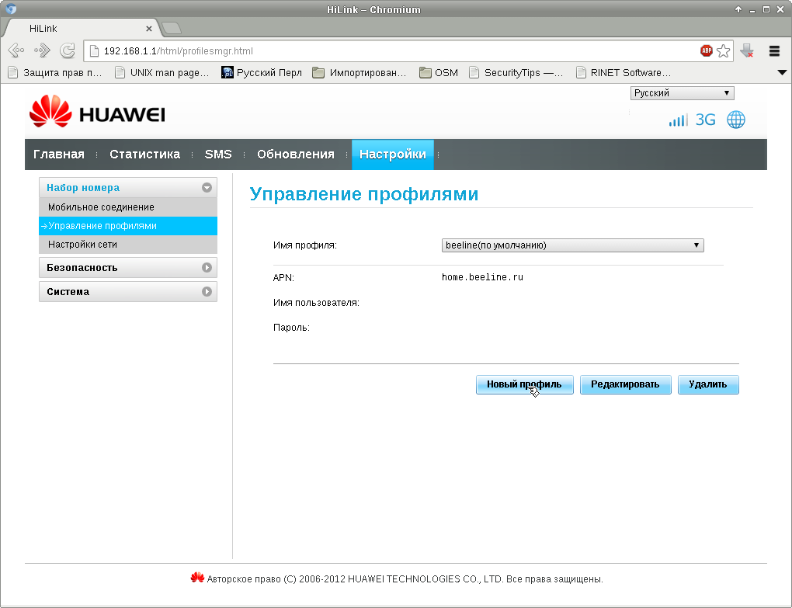
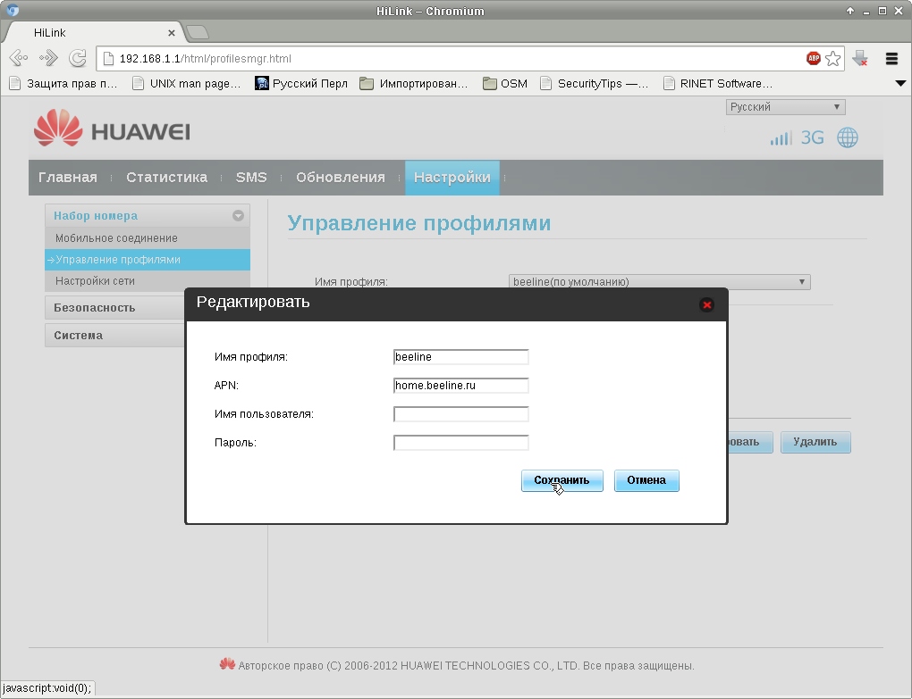
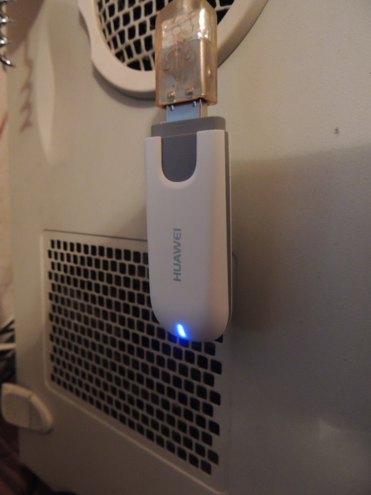

В отличие от предыдущего, попавшегося мне 3G-модема, этот модем выглядит для системы как сетевая карта.
Всё далее описанное относится к тарифу "Оптимальный безлимит".
1. Активация SIM-карты.
Перед настройкой необходимо активировать SIM-карту. Для этого нужно вставить SIM-карту в телефон и позвонить по номеру *101*1111# После активации SIM-карту можно вставить в модем.
2. Устанавливаем пакет usb-switchmodem:
# apt-get install usb-modeswitch
3. Подключаем модем и смотрим с помощью команды, какая сетевая карта появится после подключения:
# ifconfig -a
Или можно посмотреть то же самое в журнале сообщений dmesg:
# dmesg
У меня уже было две сетевые карты с именами eth0 и eth1, а вновь появившаяся получила имя eth2. В дальнейших инструкциях используется именно это имя.
4. Настраиваем сеть.
Открываем на редактирование файл /etc/network/interfaces и добавляем настройки:
allow-hotplug eth2 iface eth2 inet dhcp
Теперь можно вынуть и вставить модем снова, чтобы интерфейс получил настройки по DHCP.
5. Настраиваем подключение.
Заходим в браузере на адрес http://192.168.1.1, а на открывшейся странице переходим по ссылке "Настройка". Далее создаём новый профиль.
В настройках профиля указываем его название, в поле APN вводим адрес home.beeline.org, поле имени и пароля оставляем пустыми:
Теперь осталось перезагрузить модем через меню или вынуть его и снова вставить в разъём. После перезагрузки начальная страница примет примерно такой вид:

На самом модеме при успешном подключении светодиод загорится голубым цветом:
